- Módulo: Administración de Sistemas Operativos
- Título del trabajo Servidor LDAP
- Componentes del grupo: Isabel Quintero Sánchez
- Curso Académico: 2014/2015
- Fecha de entrega: 3 de Noviembre de 2014
Preparar la MV Lubuntu
En primer lugar, configuramos la máquina con IP estática, utilizaremos las IP's con las que disponemos, en este caso "172.16.108.16".
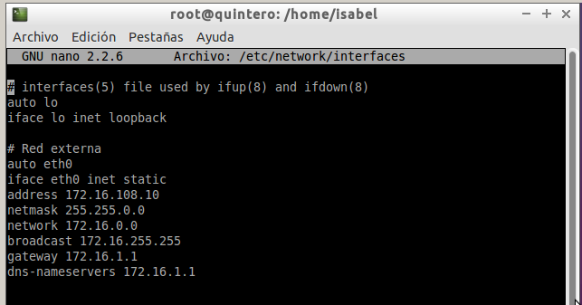Seguidamente, procedemos a la instalación del servidor LDAP mediante el comando "apt-get install slapd ldap-utils db5.3-util",una vez instalado, lanzaremos el asistente de configuración de slapd mediante el comando "dpkg-reconfigure slapd", y dará comienzo.
Usaremos como DN el siguiente: dc=nombredealumno, dc=aula109. Y, definiremos una contraseña.
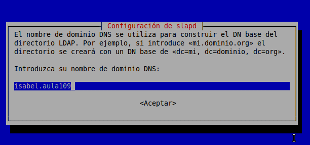 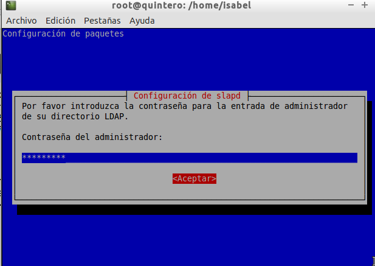Acto seguido nos informará sobre los posibles gestores de datos para almacenar el directorio y en la siguiente ventana nos preguntará qué sistema utilizar.Lo recomendable es utilizar els istema BDB.
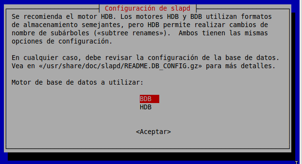Luego, nos preguntará si quiere eliminar la base de datos y, si queremos mover la base de datos antigua, le daremos a la opción "No".
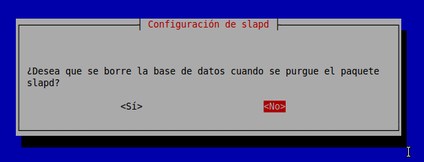 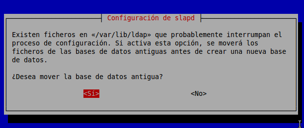Permitir el protocolo LDAPv2, "no"
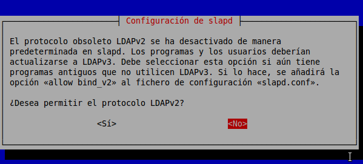Una vez configurado "sladp", nos aseguramos que tenemos definido el nombre DNS de la máquina "isabel.aula109" en el fichero /etc/hosts.
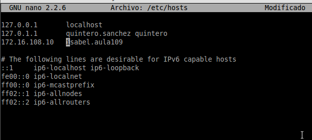Una vez instalado, comprobar a parar y reiniciar el servicio de forma manual.
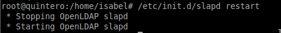 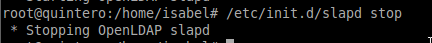Comprobamos también que el servicio se inicia automáticamente al reiniciar la máquina tras el comando que aparece en la captura de pantalla.
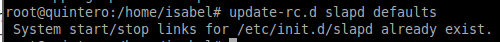Finalmente, instalamos alguna de las herramientas cliente LDAP propuestas en la documentación.
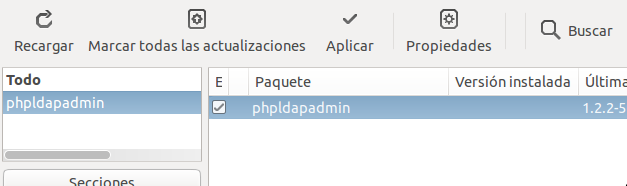Una vez terminada la instalación, entramos en "localhost/phpldapadmin" y comprobamos que funciona correctamente.
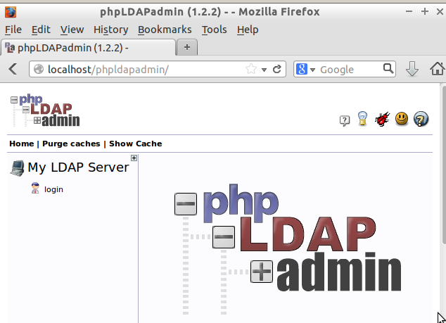Ponemos el DN y la contraseña definidos anteriormente para poder entrar.
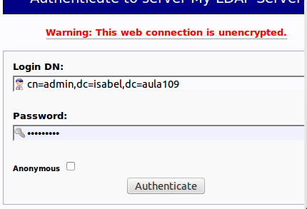Luego, debemos entrar al fichero de configuración "/etc/phpldapadmin/config.php" y cambiar varias líneas para que en la página de inicio entre con nuestro nombre definido anteriormente.
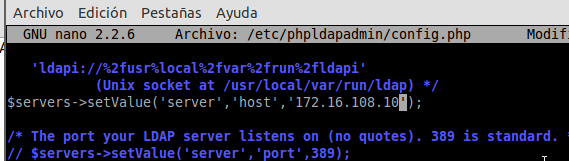 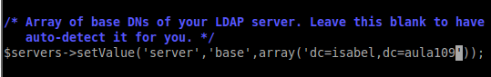 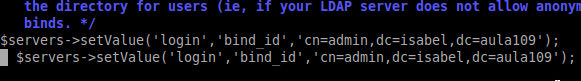 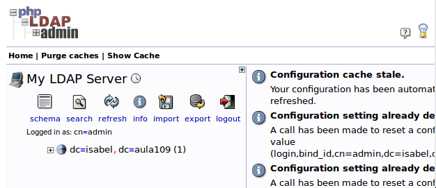Una vez dentro, creamos las unidades organizativas: "grupos" y "usuarios".
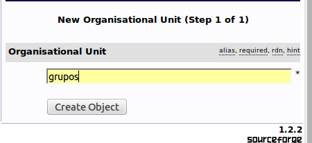 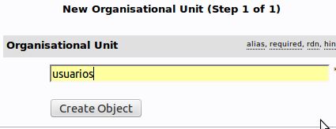Dentro de ou=grupos,creamos los grupos de "profesores" y "alumnos".
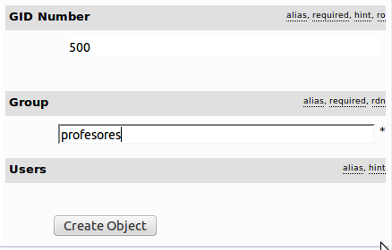 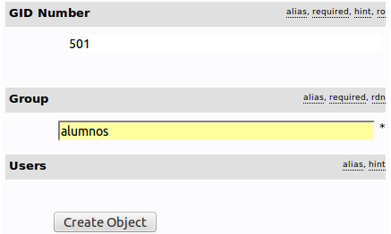Dentro de ou=usuarios,creamos varios usuarios "profesores" y "alumnos". Al principio, no nos dejaba crear los usuario, por lo que tuvimos que editar un fichero de configuración y cambiar lo que nos indica la captura de pantalla.
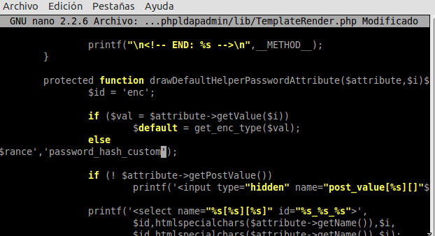 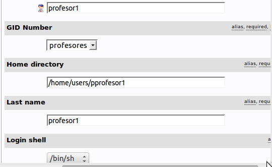 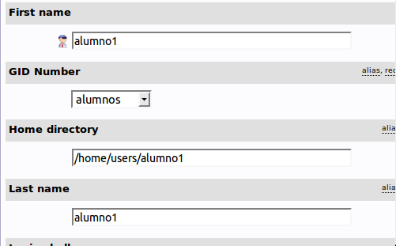Finalmente, todo lo que hemos creado, quedaría así:
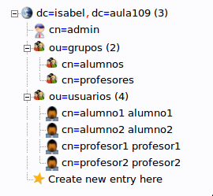Para terminar, encendemos otra máquina virtual e instalamos el "jxplorer" y comprobamos que podemos acceder al contenido de LDAP.
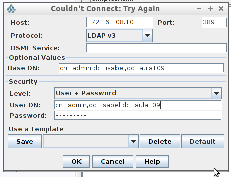 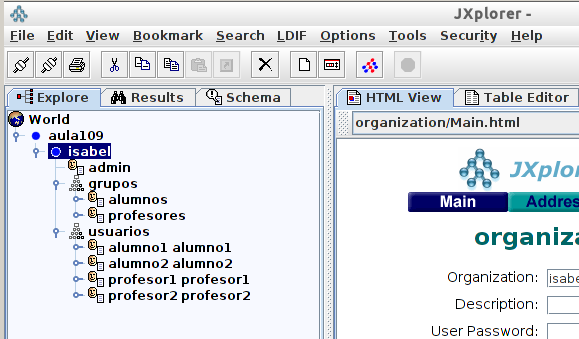